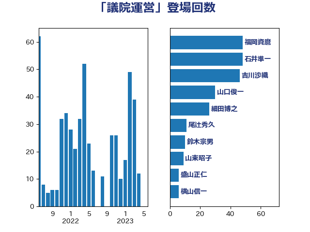

単語「議院運営」

| 福岡資麿 | 自由民主党 | 48 回 |
| 石井準一 | 自由民主党 | 48 回 |
| 吉川沙織 | 立憲民主党 | 46 回 |
| 山口俊一 | 自由民主党 | 30 回 |
| 細田博之 | 自由民主党 | 26 回 |
| 尾辻秀久 | 無所属 | 11 回 |
| 鈴木宗男 | 日本維新の会 | 10 回 |
| 山東昭子 | 自由民主党 | 9 回 |
| 盛山正仁 | 自由民主党 | 6 回 |
| 横山信一 | 公明党 | 6 回 |
| 山田賢司 | 自由民主党 | 6 回 |
| 高木毅 | 自由民主党 | 5 回 |
| 玉木雄一郎 | 国民民主党 | 5 回 |
| 松野博一 | 自由民主党 | 5 回 |
| 井上哲士 | 日本共産党 | 5 回 |
| 高橋克法 | 自由民主党 | 4 回 |
| 青柳陽一郎 | 立憲民主党 | 4 回 |
| 西村康稔 | 自由民主党 | 4 回 |
| 田名部匡代 | 立憲民主党 | 4 回 |
| 浅野哲 | 国民民主党 | 4 回 |
| 森本真治 | 立憲民主党 | 4 回 |
| 岡本あき子 | 立憲民主党 | 4 回 |
| 舟山康江 | 国民民主党 | 3 回 |
| 清水貴之 | 日本維新の会 | 3 回 |
| 浜田聡 | NHK党 | 3 回 |
| 櫻井周 | 立憲民主党 | 3 回 |
| 東徹 | 日本維新の会 | 3 回 |
| 奥野総一郎 | 立憲民主党 | 3 回 |
| 大串博志 | 立憲民主党 | 3 回 |
| 鶴保庸介 | 自由民主党 | 2 回 |
| 赤嶺政賢 | 日本共産党 | 2 回 |
| 西岡秀子 | 国民民主党 | 2 回 |
| 笠浩史 | 無所属 | 2 回 |
| 笠井亮 | 日本共産党 | 2 回 |
| 猪瀬直樹 | 日本維新の会 | 2 回 |
| 池下卓 | 日本維新の会 | 2 回 |
| 松沢成文 | 日本維新の会 | 2 回 |
| 新垣邦男 | 立憲民主党 | 2 回 |
| 岸田文雄 | 自由民主党 | 2 回 |
| 山本有二 | 自由民主党 | 2 回 |
| 小西洋之 | 立憲民主党 | 2 回 |
| 小沼巧 | 立憲民主党 | 2 回 |
| 塩川鉄也 | 日本共産党 | 2 回 |
| 堀井巌 | 自由民主党 | 2 回 |
| 北側一雄 | 公明党 | 2 回 |
| 勝部賢志 | 立憲民主党 | 2 回 |
| 佐々木紀 | 自由民主党 | 2 回 |
| 井坂信彦 | 立憲民主党 | 2 回 |
| 丹羽秀樹 | 自由民主党 | 2 回 |
| 馬場成志 | 自由民主党 | 1 回 |
| 階猛 | 立憲民主党 | 1 回 |
| 関口昌一 | 自由民主党 | 1 回 |
| 鈴木馨祐 | 自由民主党 | 1 回 |
| 逢坂誠二 | 立憲民主党 | 1 回 |
| 赤羽一嘉 | 公明党 | 1 回 |
| 西田昌司 | 自由民主党 | 1 回 |
| 西村智奈美 | 立憲民主党 | 1 回 |
| 藤田文武 | 日本維新の会 | 1 回 |
| 芳賀道也 | 国民民主党 | 1 回 |
| 舞立昇治 | 自由民主党 | 1 回 |
| 義家弘介 | 自由民主党 | 1 回 |
| 篠原孝 | 立憲民主党 | 1 回 |
| 空本誠喜 | 日本維新の会 | 1 回 |
| 石井啓一 | 公明党 | 1 回 |
| 渡海紀三朗 | 自由民主党 | 1 回 |
| 浜地雅一 | 公明党 | 1 回 |
| 泉健太 | 立憲民主党 | 1 回 |
| 沢田良 | 日本維新の会 | 1 回 |
| 池畑浩太朗 | 日本維新の会 | 1 回 |
| 榛葉賀津也 | 国民民主党 | 1 回 |
| 森山浩行 | 立憲民主党 | 1 回 |
| 梅村聡 | 日本維新の会 | 1 回 |
| 根本匠 | 自由民主党 | 1 回 |
| 柴田巧 | 日本維新の会 | 1 回 |
| 松本剛明 | 自由民主党 | 1 回 |
| 本庄知史 | 立憲民主党 | 1 回 |
| 末松信介 | 自由民主党 | 1 回 |
| 斎藤嘉隆 | 立憲民主党 | 1 回 |
| 徳永久志 | 立憲民主党 | 1 回 |
| 平木大作 | 公明党 | 1 回 |
| 平口洋 | 自由民主党 | 1 回 |
| 川田龍平 | 立憲民主党 | 1 回 |
| 山添拓 | 日本共産党 | 1 回 |
| 山下芳生 | 日本共産党 | 1 回 |
| 小野泰輔 | 日本維新の会 | 1 回 |
| 小渕優子 | 自由民主党 | 1 回 |
| 小川淳也 | 立憲民主党 | 1 回 |
| 安住淳 | 立憲民主党 | 1 回 |
| 大塚拓 | 自由民主党 | 1 回 |
| 城内実 | 自由民主党 | 1 回 |
| 吉良よし子 | 日本共産党 | 1 回 |
| 古屋範子 | 公明党 | 1 回 |
| 原口一博 | 立憲民主党 | 1 回 |
| 加藤勝信 | 自由民主党 | 1 回 |
| 前原誠司 | 国民民主党 | 1 回 |
| 住吉寛紀 | 日本維新の会 | 1 回 |
| 井上英孝 | 日本維新の会 | 1 回 |
| 串田誠一 | 日本維新の会 | 1 回 |
| 中野洋昌 | 公明党 | 1 回 |
| 中根一幸 | 自由民主党 | 1 回 |
| 上野賢一郎 | 自由民主党 | 1 回 |